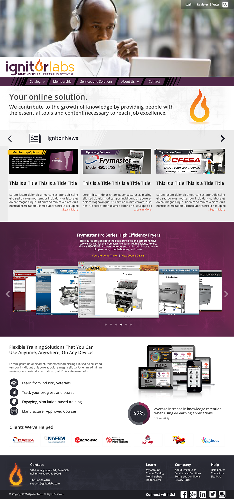

This was a proposed redesign for the Ignitor Labs website that I worked on in conjunction with Dori Rivera. The redesign was dropped due to production schedule constraints and the designs were never approved or denied.
The image on the left is for the homepage of the website, and the right is for the about page. My contributions were designing the header and menu bar as well as the accent elements for the content sections. On the home page I fully designed the tagline section beneath the menu bar, and the news section. On the about page I adjusted the typography and minor design elements to be consistent with the home page. Finally I organized the Photoshop files to be ready for use in Edge Reflow or Dreamweaver.